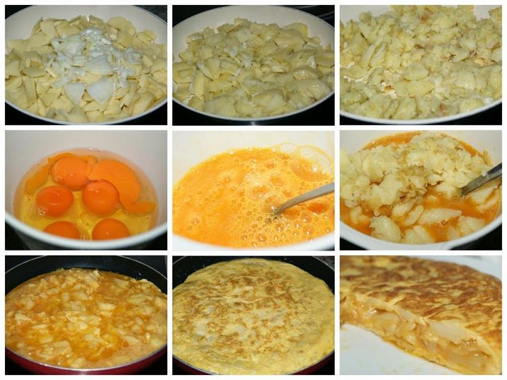

Cómo hacer una Tortilla de Patatas
- Pelar y cortar las patatas en rodajas finas.
- Picar la cebolla (opcional).
- Calentar aceite en una sartén y freír las patatas (y la cebolla) hasta que estén tiernas.
- Escurrir el exceso de aceite y dejar enfriar un poco.
- Batir los huevos en un bol y añadir las patatas fritas.
- Calentar un poco de aceite en la sartén y verter la mezcla.
- Cocinar a fuego medio, dando la vuelta a la tortilla con ayuda de un plato.
- Servir caliente o templada.
Imágenes del proceso
